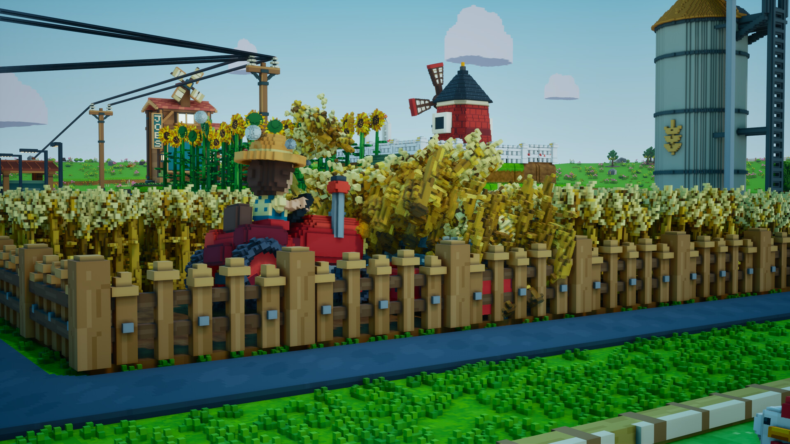
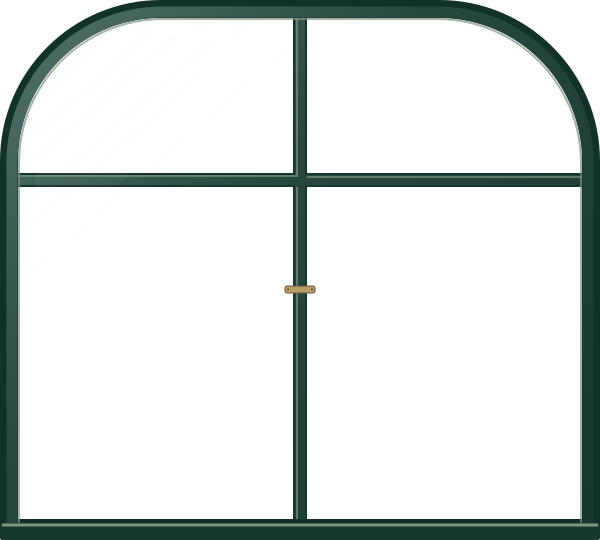
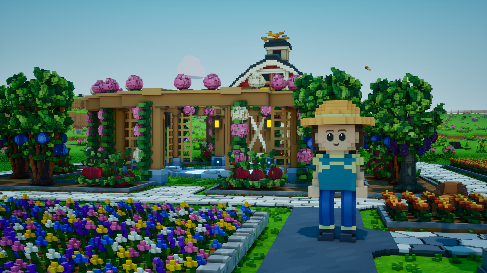
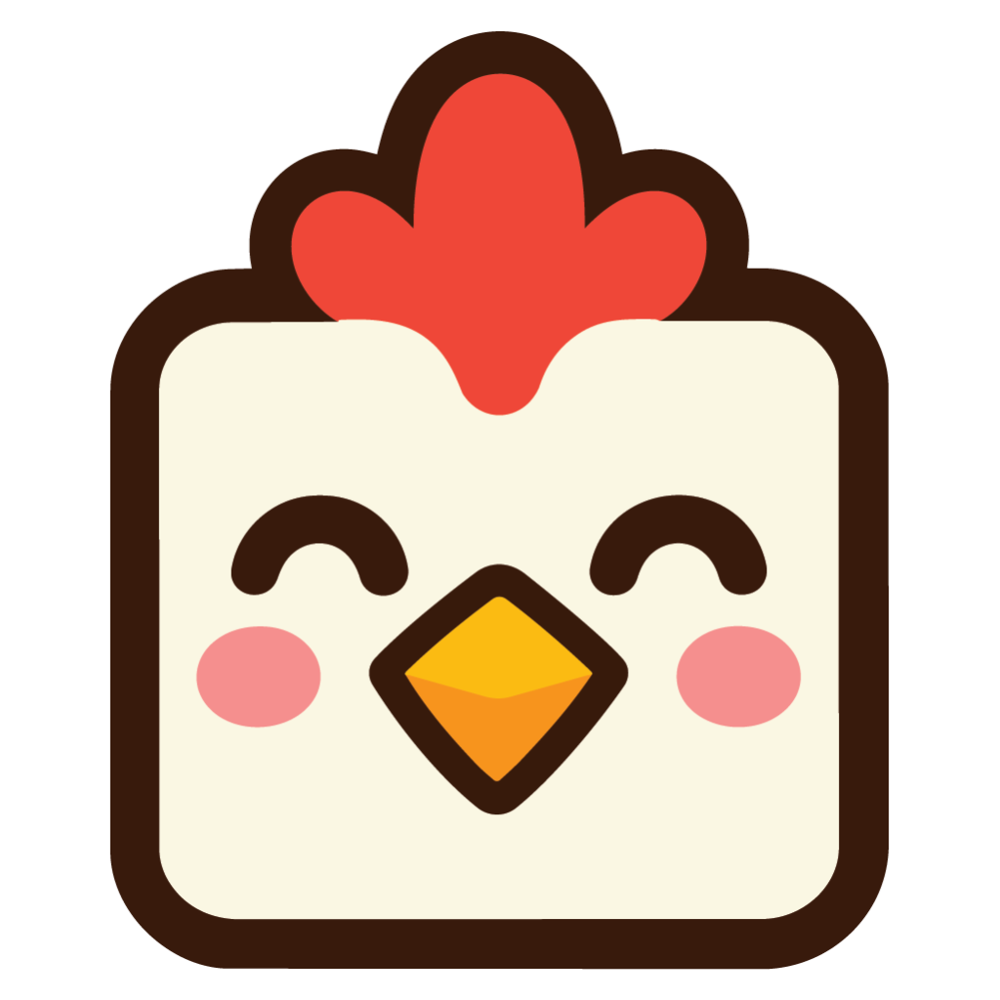

Farming
Place crops, trees, and flowers, and shape the terrain. Animal husbandry is planned to include animals and fish.
Baer & Hoggo Games / Press kit
Game facts, screenshots, logos, and contact details for press and creators.



01 / Factsheet & description
Farmion is a cozy voxel farming and life simulation game for PC. Players build farms, plant crops, trees, and flowers, and run shops, alone or with friends. Crops, sales, and processing continue while players are away.
Farmion is a cozy voxel farming and life simulation game by Baer & Hoggo Games. Players can shape the terrain, place crops, trees, and flowers, process ingredients, and sell goods in their own shops. The game also includes culinary businesses and floristry. Animal husbandry is planned to include animals and fish.
Farmion supports solo play and online co-op. Crops grow, customers buy goods, and processors keep working while players are away. FarmBots can help with the work.
Farm progress belongs to the save. Character progress belongs to each player, including cosmetics and small gameplay unlocks such as harvesting larger areas.
The two-person studio is developing Farmion alongside their jobs. The game is planned to enter Steam Early Access in Q4 2026, with player feedback helping guide development.
Proposed base prices. Planned launch discount: 15% for the first 8 days.
| Currency | Base price |
|---|---|
| USD | $10.95 |
| GBP | £9.89 |
| EUR | 9,95€ |
Planned for Steam Early Access. The game is in development; features and visuals may change.
02 / Gameplay
Place crops, trees, and flowers, and shape the terrain. Animal husbandry is planned to include animals and fish.
Crops grow, shops sell goods, and processors keep working between sessions.
Play solo or join friends in online co-op.
Process ingredients into new products and stock your own shops.
Put FarmBots to work on the farm and in your businesses.
Farm progress belongs to the save. Character progress belongs to each player: cosmetics and small unlocks, such as harvesting larger areas.
03 / Screenshots
8 screenshots shown.
Original images from the Farmion Steam gallery. Downloads preserve the full frame. Please credit Farmion / Baer & Hoggo Games. All images show a game in development.
04 / Press resources

05 / About the studio
Baer & Hoggo Games is a two-person studio based in the European Union. We’re working on Farmion alongside our jobs.
Game Developer
LinkedIn ↗Game Developer

{kind=link}
{kind=link}
{kind=link}
{kind=link}
{kind=link}
{kind=link}
{kind=link}
{kind=link}
{kind=link}